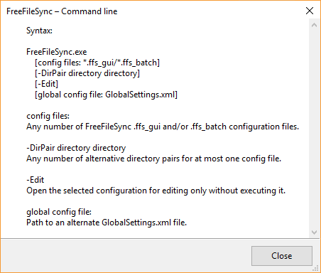

Command Line Usage
FreeFileSync supports additional synchronization scenarios via a command line interface.
To get a syntax overview, open the console, go to the directory where FreeFileSync is installed and type:
FreeFileSync.exe -h or FreeFileSync.exe --help

1. Run a FreeFileSync batch job
In order to start synchronization in batch mode, supply the path of a ffs_batch configuration file as the first argument for FreeFileSync.exe:
FreeFileSync.exe "D:\Backup Projects.ffs_batch"
After synchronization one of the following status codes is returned:
Return Codes
0 - Synchronization completed successfully
1 - Synchronization completed with warnings
2 - Synchronization completed with errors
3 - Synchronization was aborted
You can evaluate these codes from a script (e.g. a cmd or bat file on Windows)
and check if synchronization completed successfully:
"C:\Program Files\FreeFileSync\FreeFileSync.exe" "D:\Backup Projects.ffs_batch"
if errorlevel 1 (
::if return code is 1 or greater, something went wrong, add special treatment here
echo Errors occurred during synchronization...
pause
)
Instead of showing an error message, you can also send an email notification (using a third party tool).
Attention
If you are running the batch job unattended, make sure your script is not blocked showing a notification dialog. Consider the
following options when setting up the FreeFileSync batch job:
- Set When finished to Exit to skip the summary dialog after synchronization.
- Set up error handling to Ignore errors or Cancel to stop the synchronization at the first error.
2. Start a FreeFileSync GUI configuration
If you pass a ffs_gui file, FreeFileSync will start in GUI mode and immediately start comparison (but only if all directories exist):
FreeFileSync.exe "D:\Manual Backup.ffs_gui"
3. Customize an existing configuration
You can replace the directories of a given ffs_gui or ffs_batch configuration file by using the -DirPair parameter:
FreeFileSync.exe "D:\Manual Backup.ffs_gui" -dirpair C:\NewSource D:\NewTarget
4. Merge multiple configurations
When more than one configuration file is provided, FreeFileSync will merge
everything into a single configuration with multiple folder pairs and start in GUI mode:
FreeFileSync.exe "D:\Manual Backup.ffs_gui" "D:\Backup Projects.ffs_batch"
5. Use a different GlobalSettings.xml file
By default, FreeFileSync uses a single GlobalSettings.xml file containing options that apply to all synchronization tasks;
for examples see Expert Settings.
If you want FreeFileSync to use a different settings file instead, you can specify the path via command line:
FreeFileSync.exe "D:\My GlobalSettings.xml"